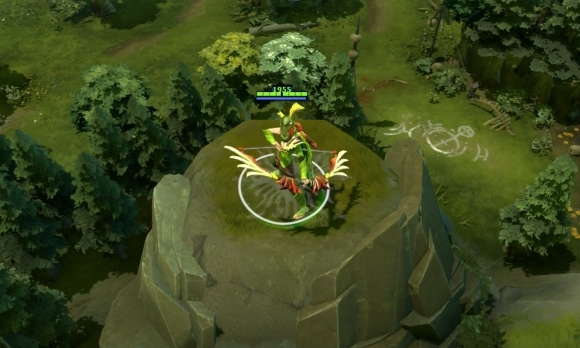
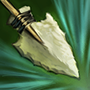
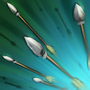

 风行者
风行者
背景故事
西部森林中隐藏了无数的秘密。其中之一就是受到风神眷顾的森林弓箭大师莱瑞蕾。风行者莱瑞蕾的家人在她出生那夜的暴风雨中全部去世了，狂风摧毁了他们的房屋，一切都化为乌有。只有还是婴儿的风行者在充满死亡和破坏的瓦屑中幸存了下来。暴风雨平静下来后，自然之风注意到了这个在草地中哭泣的幸运儿。风很怜悯这个孩子，便将她抬起，放到一户邻居的门前台阶上。之后的岁月里，风会时不时回来看下这个孩子的生活，从远处看着她磨练自己的技术。现在，经过多年的训练，风行者射出的箭矢百步穿杨。她迅捷的步伐让人难以看清，犹如背后有风在推动。风行者用飓风般的箭矢群杀戮敌人，她几乎已成为自然之力本身。
束缚击 该技能可以将两个敌人一起束缚，使他们同时眩晕。 魔法消耗：90/100/110
冷却时间：12.0/12.0/
|
强力击 强力击将摧毁作用范围内的树木。 魔法消耗：90/100/110
冷却时间：9.0/9.0/9.
|
风行 提升移动速度并闪避一切物理攻击，同时降低周围敌人的移动速度。 减速效果无视技能免疫。 魔法消耗：100/100/10
冷却时间：14
|
集中火力 风行者受风的引领，攻击敌方单位或建筑的攻击速度增加500，但是攻击伤害降低。不过次级物品效果的攻击力加成不会降低。持续20秒。可用神杖升级。 能够以建筑和技能免疫单位为目标。 魔法消耗：75/100/125
冷却时间：60.0/60.0/
|